1. Introdução
O curso Introdução ao Python tem como objetivo apresentar os elementos básicos da linguagem Python (https://www.python.org/), incluindo operações matemáticas básicas, criação de objetos, importação e exportação de dados, manipulação de dados e visualização (gráficos e mapas). O curso foi desenvolvido por economistas e possui foco nas aplicações de Python para economia, em todos os seus ramos de aplicações.
O material do curso é livre e está licenciado com uma Licença CC BY-NC-SA 4.0. Atualizações podem ser consultadas no site do Núcleo de Estudos em Desenvolvimento Urbano e Regional - NEDUR - da Universidade Federal do Paraná (UFPR).
Em todo o curso, vamos utilizar o Jupyter Notebook, um ambiente de desenvolvimento integrado (IDE - Integrated Development Environment) web, no qual é possível editar e executar documentos em Python. Você poderá acessar o Jupyter Notebook instalando a plataforma Anaconda (instruções na seção 1.2), que inclui Python e várias outras ferramentas, ou instalar diretamente o Jupyter Notebook (instruções na seção 1.3).
A principal vantagem de instalar a plataforma Anaconda está no gerenciamento de pacotes e versões, que nesse caso, fica a “cargo” da plataforma. No entando, a plataforma vem com outras interfaces em Python e também em R, que não serão necessárias caso você não pretenda explorar essas outras possibilidades, e podem gerar problemas, caso você tenha limitações de memória ou performmance no seu computador. Instalando diretamente o interpretador Python e o Jupyter Notebook, você terá todos os recursos necessários para seguir com o curso.
Se preferir começar sem nenhum programa instalado no seu computador, você pode utilizar o Google Colaboratory. Basta ter uma conta Google ativa (instruções de uso também serão apresentadas na Seção 1.4.).
Na utilização ou citação de partes do material, referencie da seguinte maneira:
SOUZA, K. B. VALE, V. A. Introdução à Python. Núcleo de Estudos em Desenvolvimento Urbano e Regional (NEDUR) da Universidade Federal do Paraná (UFPR), Curitiba-PR, 2022. Disponível em: http://www.nedur.ufpr.br/portal/cursos
Bom curso!
1.1. Links úteis
Antes de iniciar o curso, acesse os links abaixo. Você vai encontrar materiais, dicas, exemplos, novidades e muito mais. Esses links serão úteis ao longo do seu processo de aprendizado.
Segure o Ctrl para abrir os links em novas abas:
Confira também alguns livros, materiais e blogs disponíveis:
1.2. Instalando a Plataforma Anaconda
Para o curso será utilizada a Plataforma Anaconda. Faça o download no link abaixo:
A plataforma Anaconda suporta as versões mais recentes de Python, além das ferramentas do RStudio, e vem com diversos pacotes instalados, facilitando o uso para análise de dados.
Após a instalação da Anaconda, ao abrir o ANACONDA NAVIGATOR (disponível no menu INICIAR do Windows), você terá as seguintes opções:
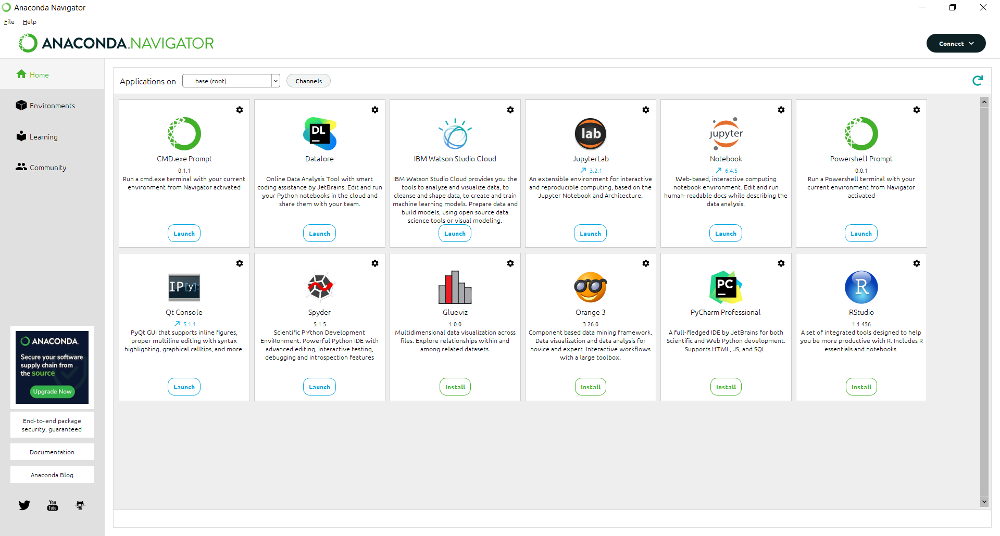Repare que a plataforma oferece vários aplicativos. Vamos usar o Jupyter Notebook (veja ícone na figura acima), um ambiente de desenvolvimento integrado web. Após clicar em Jupyter Notebook, siga as instruções de primeiros passos na seção 1.4.
1.3. Instalando o Jupyter Notebook (sem a Plataforma Anaconda!)
SE VOCÊ PREFERIU NÃO INSTALAR A PLATAFORMA ANACONDA, pode instalar apenas o Jupyter Notebook.
Nesse caso, você vai precisar instalar primeiro o interpretador Python no seu computador, fazendo o download em: https://www.python.org/downloads/
Se você está usando Windows, basta clicar em “Download Python 3.10.6”, como na figura abaixo:
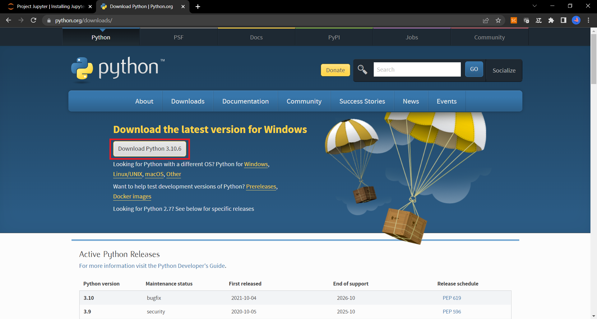Ao clicar no arquivo executável baixado, você verá a tela abaixo. Nessa tela, certifique-se de que a opção “Add Python 3.10 to PATH” está marcada. Esta opção, permite que você acesse facilmente o interpretador posteriormente.
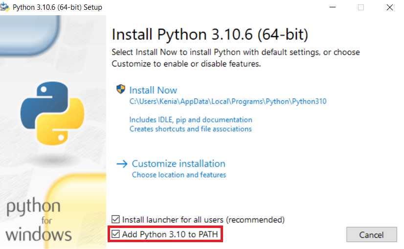Siga as instruções de instalação, e na última tela (Setup was successful), certifique-se de marcar a opção Disable path length limit. Esta opção irá evitar problemas futuros relacionados ao tamanho do “caminho” de localização dos seus arquivos dentro do Windows.
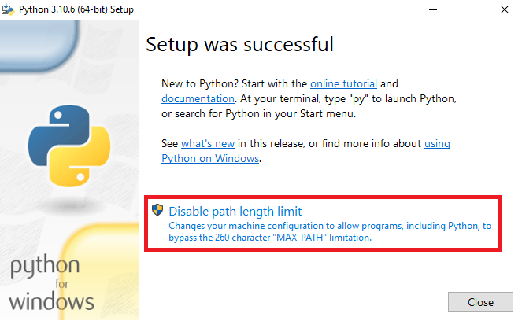Para certificar-se de que o interpretador Python foi corretamente instalado no seu computador, abra uma janela de comando (você pode encontrar o Prompt de Comando digitando cmd no buscador do Windows), e digite o comando:
python --version
Se tudo estiver corretamente instalado, aparecerá Python 3.10.6, como na tela abaixo:
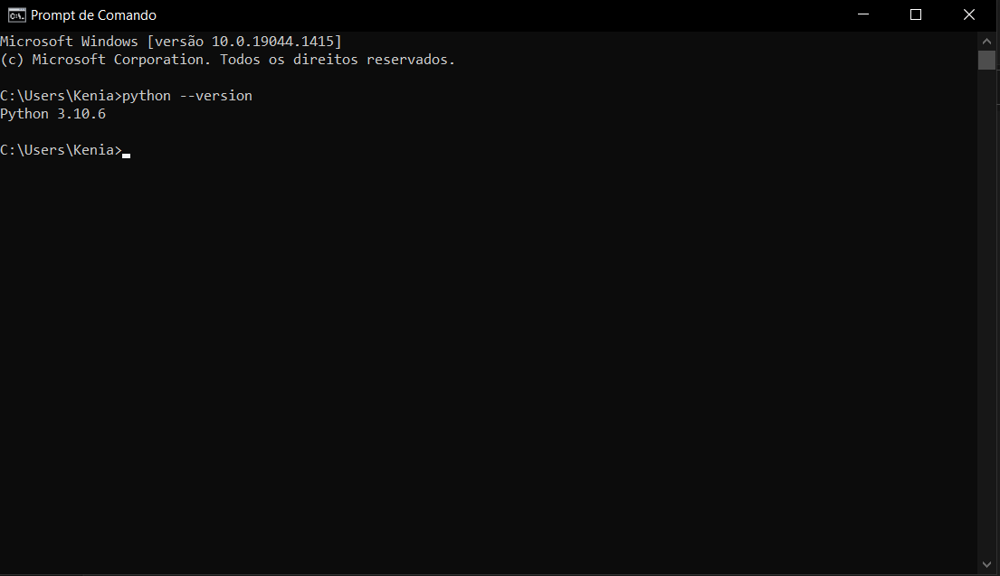Com o interpretador corretamente instalado, na mesma tela de comando, você poderá instalar o Jupyter Notebook com o comando:
pip install notebook
Depois que a instalação estiver completa, para abrir o Jupyter Notebook, basta digitar:
jupyter notebook
Abrirá uma tela no seu navegador, como indicado na próxima seção.
1.4. Primeiros passos no Jupyter Notebook
Independente de como você iniciou o Jupyter Notebook, diretamente com o Prompt de Comando, ou com a Plafaforma Anaconda, o seu navegador irá abrir com a seguinte tela:
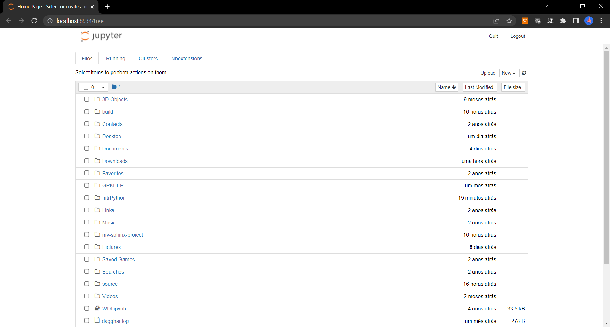O diretório de trabalho padrão do Jupyter Notebook é a pasta do seu usuário Windows (algo como C::nbsphinx-math:`User`:nbsphinx-math:`Seu `Nome). Para alterar esse diretório, basta salvar o seu arquivo em outra pasta. No canto supeior direito da página, você pode clicar em New>Folder. Nesse caso uma Untitled Folder foi incluída no diretório, como mostra a figura abaixo:
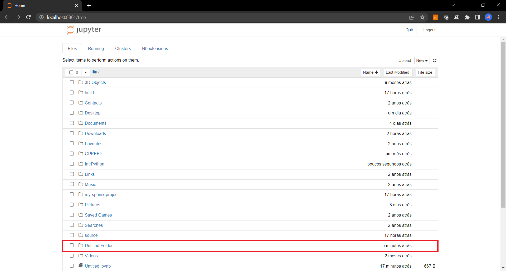Você pode renomear a pasta clicando na caixa ao lado da pasta e depois em Rename no canto superior esquerdo. Aparecerá uma nova janela, como na figura abaixo:
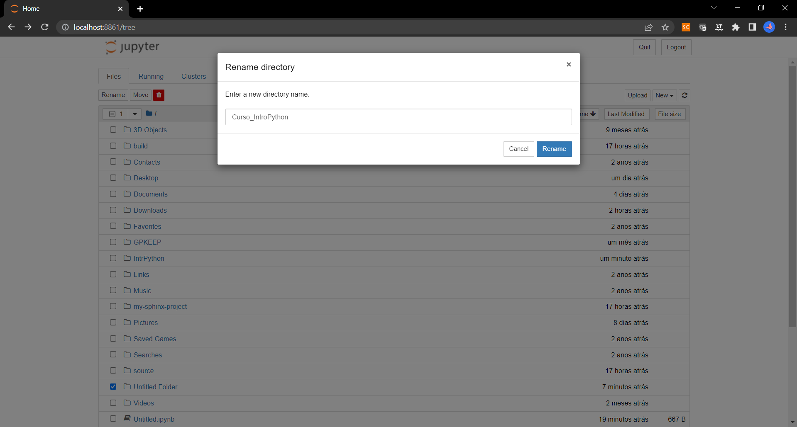Após entrar na pasta desejada (esse será o seu diretório de trabalho), usando o menu, você pode começar um novo documento, clicando em New>Python 3(ipykernel) no canto superior direito da página. A seguinte página será aberta:
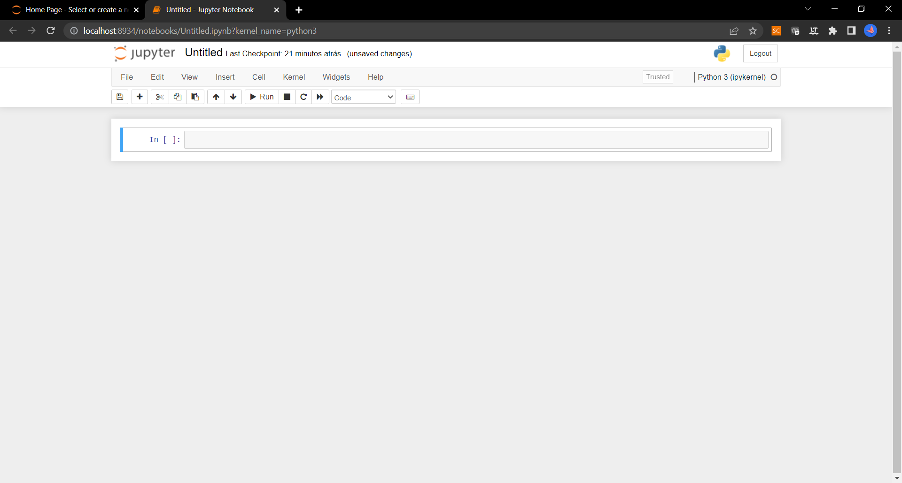Nessa janela, você poderá digitar seus códigos (comandos) diretamente no Jupyter Notebook, assim como incluir comentários usando #.
Por exemplo, você pode inserir um cabeçalho com o nome do curso (e outras informações de seu interesse, como seu nome e data). Copie e cole no seu Jupyter Notebook o texto abaixo:
[ ]:
# Introdução à Python
# Seu nome
# Agosto de 2022
Repare que o texto irá aparecer em verde (como na caixa acima). Nesse caso, como usamos o símbolo # antes do texto, a linguagem Python reconhece essa linha como um comentário e não como um código (comando) executável.
Outra informação útil sobre o Jupyter Notebook é entender o comportamento das células. Enquanto você está editando uma célula, ela está em modo de edição, e aparece um retângulo de bordas verdes em torno da célula. Quando a célula está selecionada, mas não está em modo de edição, a borda fica azul.
Para sair do modo de edição, você pode clicar fora da célula, ou clicar no botão Esc do seu teclado. Fora do modo de edição, você pode utilizar os atalhos A para adicionar uma célula acima, ou B para adicionar uma nova célula abaixo. Esses e outros atalhos podem ser consultados no menu, em Help>Keyboard Shortcuts.
1.4.1. Markdown
Observe também que nos notebooks que estamos usando, há algumas células que possuem apenas texto e nenhum código. Essas são células de Markdown, uma linguagem de marcação, que permite inserirmos textos, figuras e fórmulas entre os trechos de código. No Jupyter Notebook, para alterar uma célula de código para Markdown, selecione essa opção no penúltimo ícone do menu, como mostra a figura abaixo:
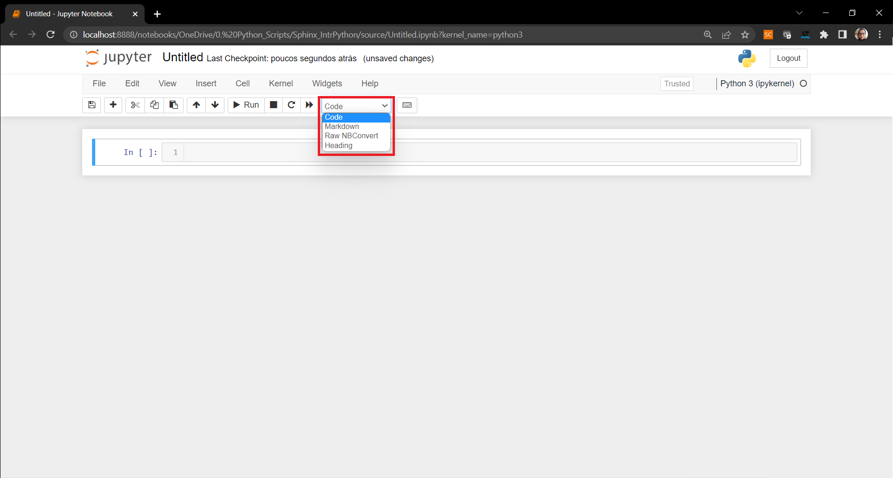Alternativamente, quando estiver editando a célula (a célula estiver com borda verde), você pode clicar na tecla Esc (para sair do modo de edição), e M para mudar a célula para Markdown.
1.5. Google Colab
Caso você não queira instalar a Plataforma Anaconda, uma alternativa é o usar o Google Colaboratory. Para utilizar basta ter uma conta Google ativa.
Clicando no link, você verá uma janela semelhante à figura abaixo. Clique em Novo notebook, e comece a trabalhar!
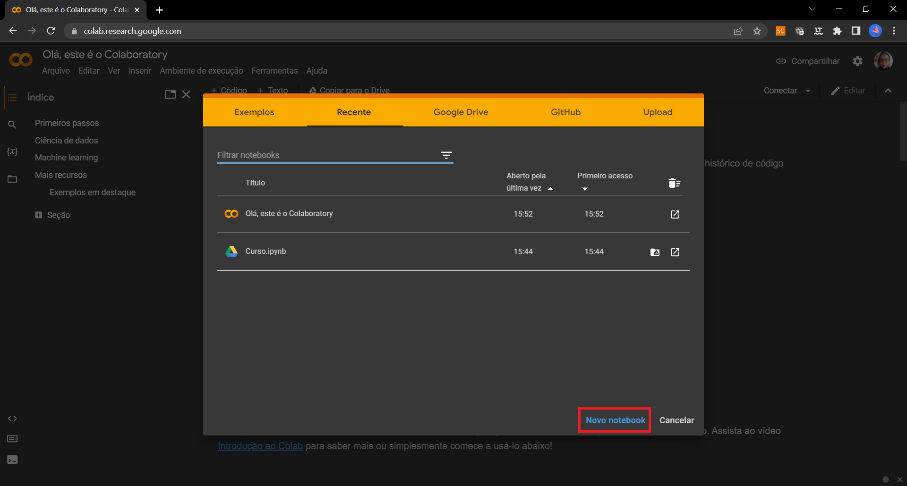Como mencionado anteriormente, durante o curso, vamos usar o Jupyter Notebook. Porém, todos os arquivos .ipynb do curso podem ser abertos no Google Colab. Os dois ambientes possuem diversas semelhanças nas funcionalidades. Caso opte por utilizar o Google Colab, você vai precisar instalar alguns pacotes que já vêm pré-instalados na Plataforma Anaconda, então observe os erros, e verifique se todos os pacotes foram instalados.